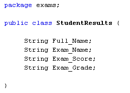
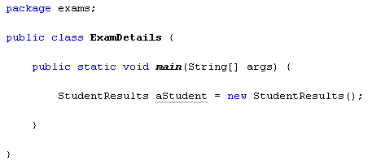
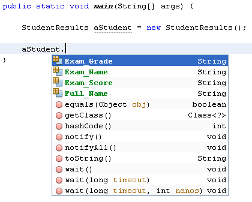
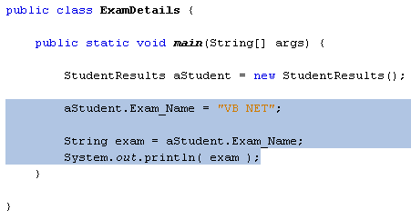
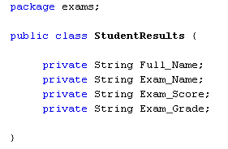
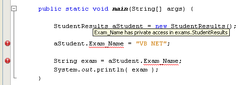
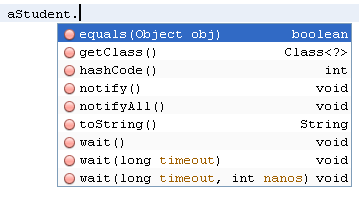

In a previous section, we talked about variables inside of methods. The variables you set up inside of methods are only available to those methods. They are not available to other methods. They are said to have local scope.
However, you can set up variables outside of methods that all the methods in your class can see. These are known as Field variables (or Instance variables). You set them up in exactly the same way as any other variable. Add the following four fields to your new StudentResults class:

We're setting up four string variables (four string fields). As the names of the fields suggest, the string will hold a person's name, an exam name, a score, and a grade. These four fields will be available to all the methods that we write in this class, and won't be local to any one method. They are said to have global scope.
To see just how global they are, click back on to your ExamDetails class, the one with the main method. Add the following line of code to create a new object from your StudentResults class:

This is the same as we did in the previous section - used the new keyword to create a new object. The name of the object will be aStudent, and it is of type StudentResults, which is our class.
On the next line, type the name of the variable (aStudent), followed by a dot. As soon as you type the dot NetBeans display a popup list of methods and properties available to your object:

The four fields that we set up are on the list. They are not methods, but something called a property. The fact that they are on the list at all means that they have global scope. If they had local scope they wouldn't be on the list.
You can set values for properties. Try this: add the following highlighted code to your main method:

We've selected the Exam_Name field from the list and assigned it the value "VB NET". The next line then gets the value of Exam_Name from the aStudent object. The result is stored in a variable called exam, and then printed out. When you run the programme, the output is the string "VB Net".
So the four variables we've set up are now available to both classes.
However, it's not a good idea to make field variables global like this. You tend to lose track of just what values are being held in them, and it therefore makes debugging your code a lot harder. It's considered good coding to narrow the scope of field variables.
To make a field variable available only to a particular class, you add the Java keyword private just before the field declaration. Change the code in your StudentResults class to this:

Now, only code within the StudentResults class can see these field variables. To check, go back to your main method. You should see some warnings and red underlines:

Delete the three lines at the bottom. Type aStudent and then a dot again to see the NetBeans popup list:

As you can see, the four field variables have now vanished. They have vanished because they no longer have global scope, and therefore can't be seen from the ExamDetails class.
In the next part, you'll learn about something called a class constructor.